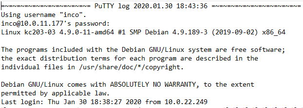
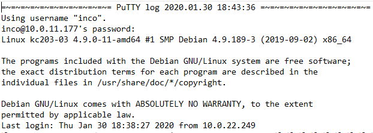
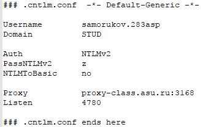
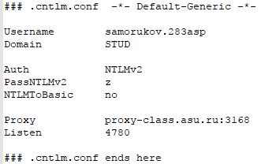
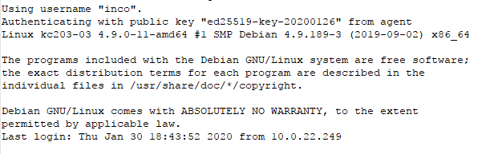
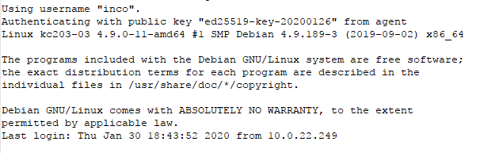

1.1В качестве SSH клиента был выбран PuTTY. С его помощью был получен санкционированный доступ к удалённой системе inco@10.0.11.177
 

1.2После изучения списка систем с общим доступом был выбран sdf.org, после подключения к системе был пройден этап регистрации и получен доступ.
1.3Терминальный сеанс с удалённым сервером был записан с помощью встроенной функции записи логов в Putty.


1.4В моём случае доступ к интернету был ограничен, поэтому Putty был настроен на использование proxy с помощью cntml.
 

1.5Для сохранения настроек Putty, используемых для доступа к серверу, в отдельный файл необходимо экспортировать ветку Компьютер\HKEY_CURRENT_USER\Software\SimonTatham\PuTTY\Sessions
1.6Была сгенерирована пара ключей с помощью PuttyGen, после этого ключи были записаны в файл ./ssh/authorized_keys, теперь для подключения к серверу не требуется ssh ключ и его можно удалить из Putty.Скачать Public ключ

1.7В pagent был загружен закрытый ключ, который позволяет зайди на удалённый сервер без ввода пароля, если убрать его то будет необходимо сново вводить пароль
 

2.1С помощью pscp на удалённый сервер были переданы два файла proc3.exe и task.txt, для передачи файлов была использована команда pscp.exe [Путь до файла на машине] [Путь назначения]